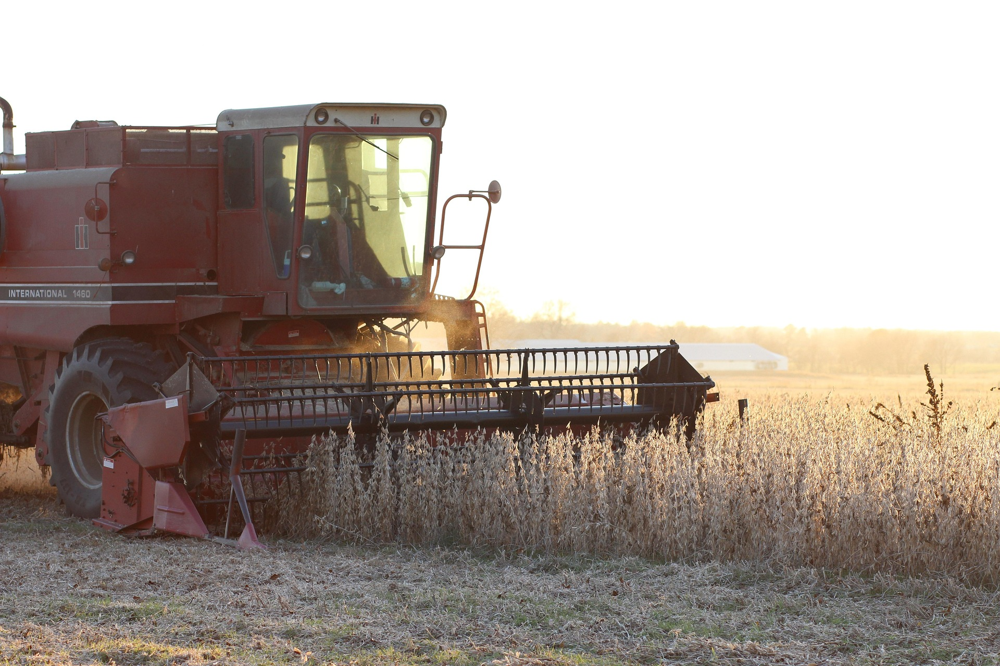
O agronegócio brasileiro começou apenas no século XX.
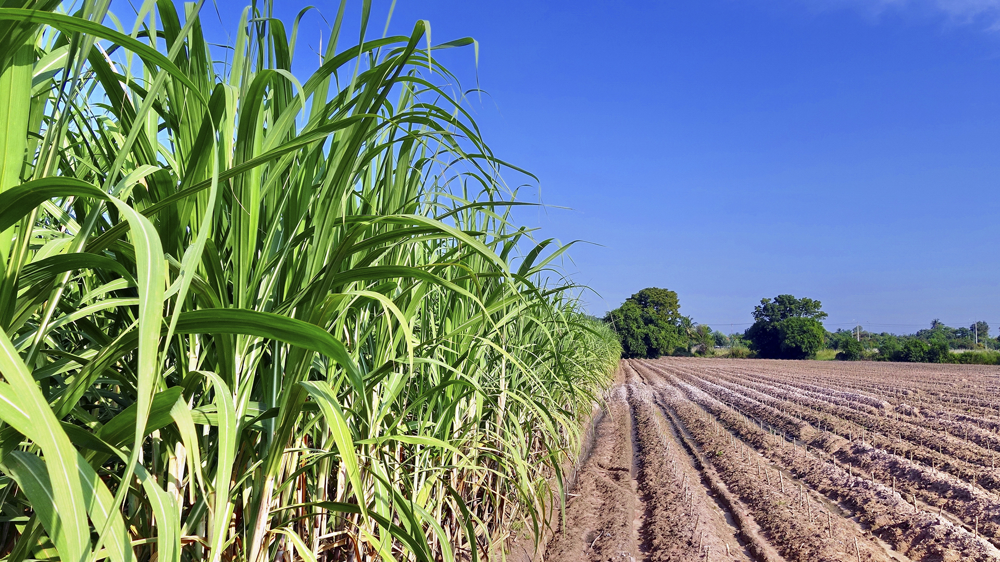
MITO — O agro brasileiro nasceu com a colonização, a partir do cultivo da cana-de-açúcar no século XVI, evoluindo com o café e, mais tarde, com a soja e o milho.

O agronegócio brasileiro começou apenas no século XX.

MITO — O agro brasileiro nasceu com a colonização, a partir do cultivo da cana-de-açúcar no século XVI, evoluindo com o café e, mais tarde, com a soja e o milho.
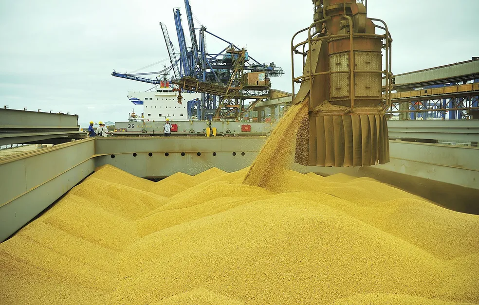
O Brasil é o maior exportador de soja do mundo.
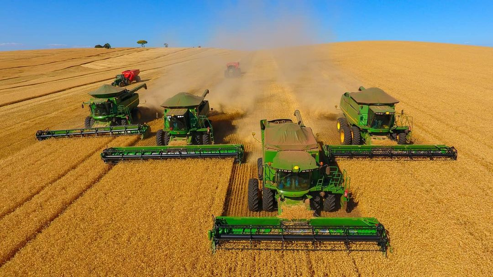
VERDADE — O Brasil é o maior produtor e exportador de soja do planeta, respondendo por mais de 50% do comércio global do grão.
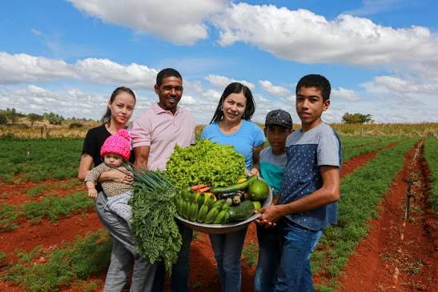
O agronegócio é composto apenas por grandes fazendas.
MITO — Cerca de 70% dos alimentos que chegam à mesa do brasileiro vêm da agricultura familiar, que representa a maioria dos estabelecimentos rurais no país.
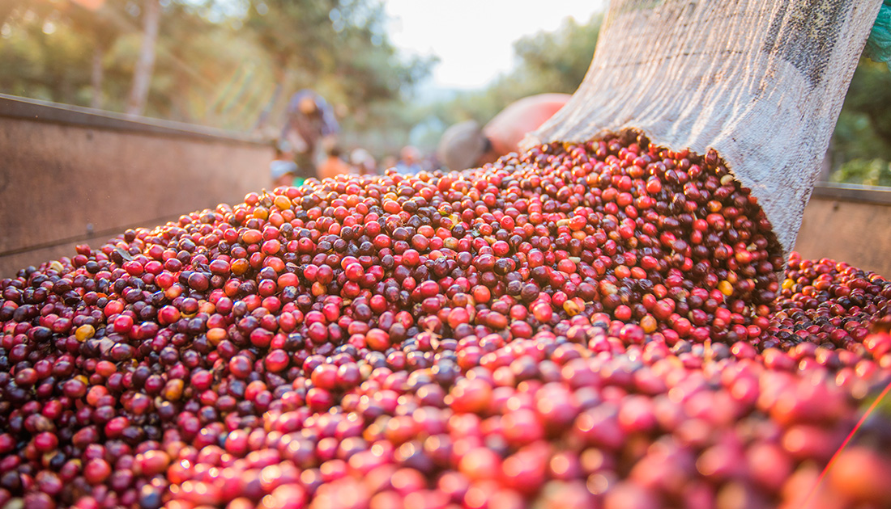
O café foi o primeiro grande produto de exportação do Brasil.
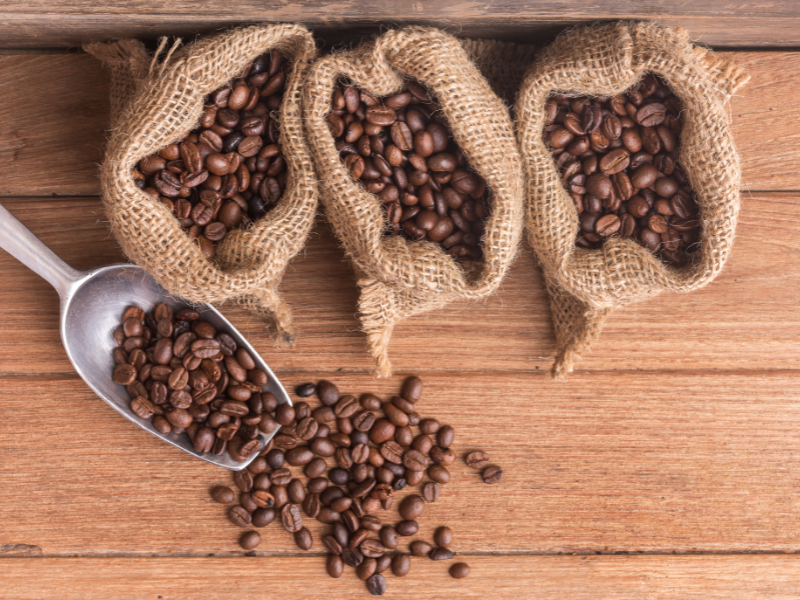
VERDADE — O café foi o motor da economia brasileira no século XIX e início do XX, tornando o Brasil o maior produtor mundial por décadas.
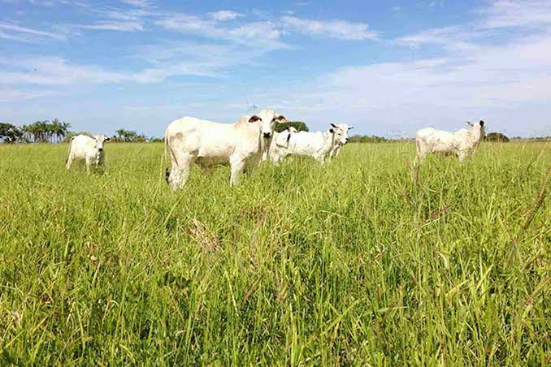
A pecuária brasileira é a maior do mundo.
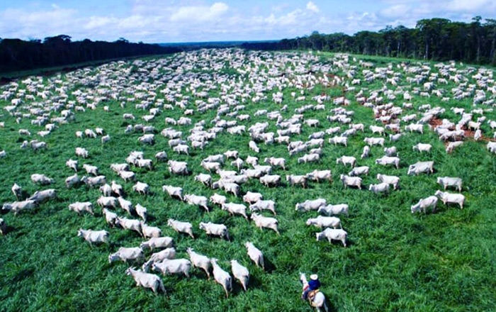
VERDADE — O Brasil possui o maior rebanho bovino comercial do mundo, com mais de 200 milhões de cabeças, e é o maior exportador de carne bovina.
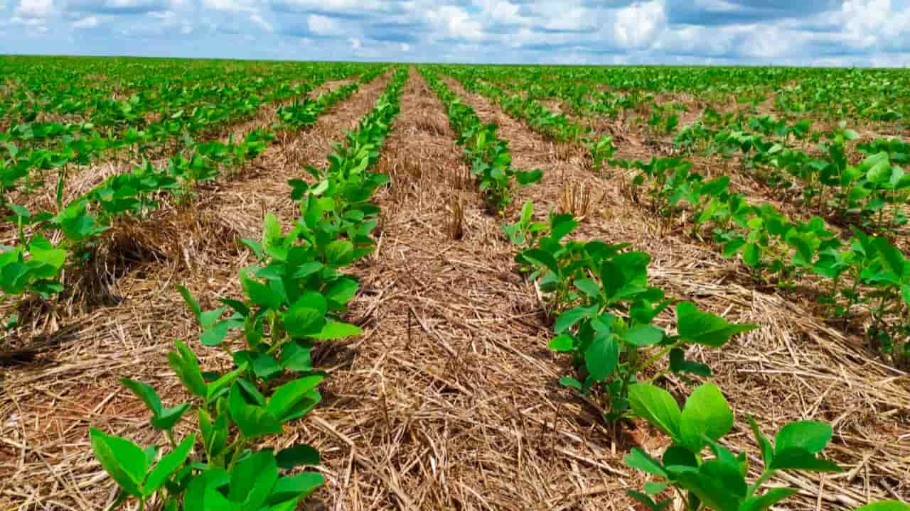
A agricultura brasileira é uma das mais sustentáveis do mundo.
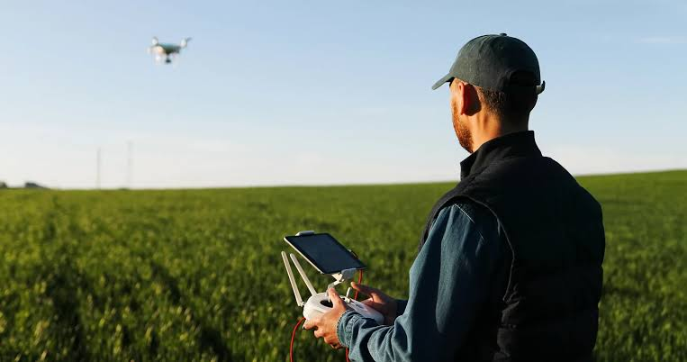
VERDADE — O Brasil adota técnicas como plantio direto, integração lavoura-pecuária e uso de bioinsumos, sendo referência global em agricultura tropical sustentável.
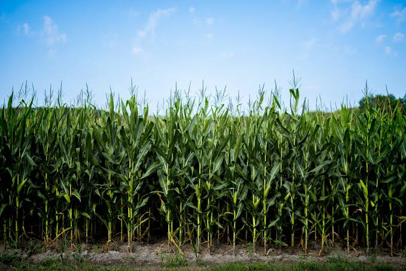
O milho é usado apenas para alimentação humana.
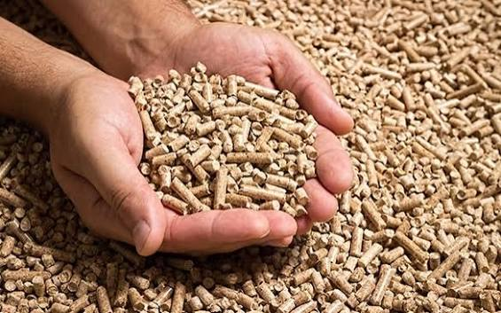
MITO — Grande parte do milho produzido no Brasil é destinada à ração animal, especialmente para aves e suínos, além de ser matéria-prima para etanol e outros produtos.
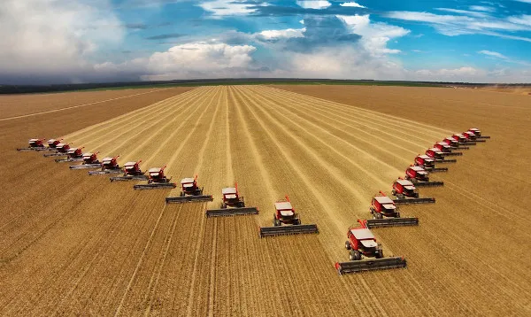
O agronegócio representa mais de 20% do PIB brasileiro.

VERDADE — O agronegócio responde por cerca de 25% do Produto Interno Bruto (PIB) do Brasil, sendo um dos pilares da economia nacional.
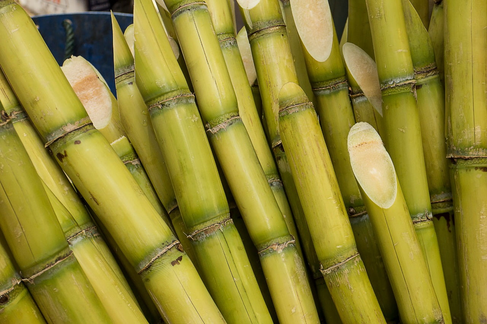
O Brasil é o maior produtor de cana-de-açúcar do mundo.
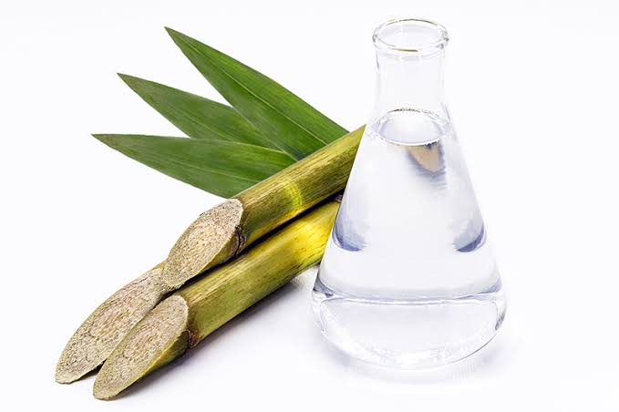
VERDADE — O Brasil é o maior produtor de cana-de-açúcar do planeta, sendo também o líder mundial na produção de etanol a partir desse insumo.